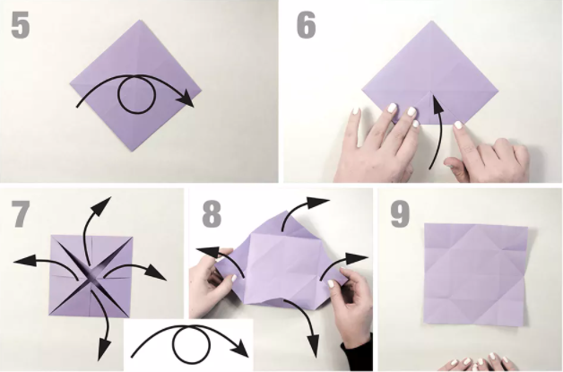

BY CLICKING ON "MY GIT HUB PAGE" YOU CAN GET AMAZING PROJECTS MADE BY ME
1: Start by folding diagonally, both ways, and then old the
paper in half, both ways. Fold all four corners into the center.

2: Flip the paper over, and fold all four corners into the center.
Unfold the previous step and flip the model over
to the other side. Unfold the paper.
3: Fold the right side into the center. Fold the left side to the center, too.
Holding the paper in the center, pull the right flap out to the right.
Pull the left flap out in the same way, and flatten the top section.
4: Make the same right and left flaps for the bottom section.
Flatten what you have. It should look like a squat, rather
horizontal hexagon.
Fold the top section behind. Flatten the model.
5: Flip the right layer down. Flip the left flap down.
Fold a small section inward where indicated.
Fold the model in half to the right.
6: Fold a small section over where shown.
Unfold the back layer to the left.
Reverse fold the left side of the fold you just created.